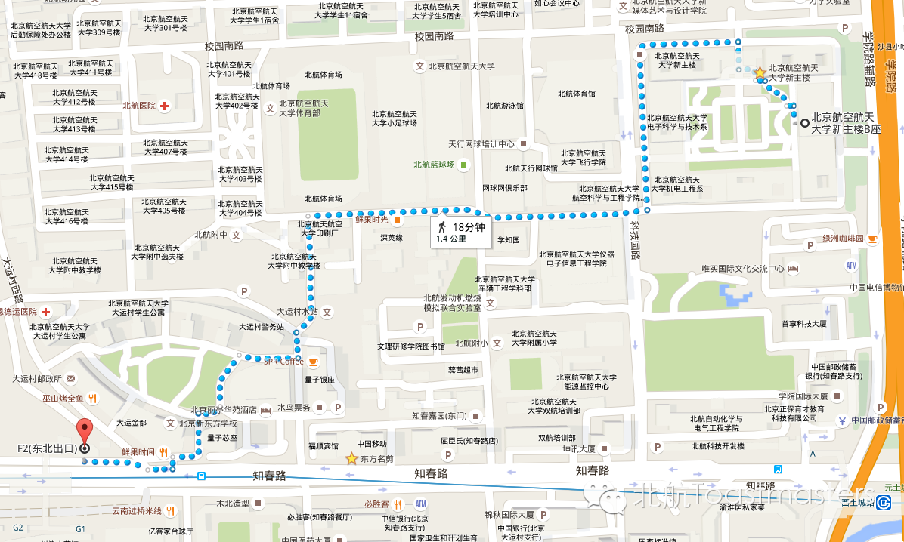

Maps
Time:19:30-21:30,Friday,May.15
Venue:Room B208,New Main Buildin,
Beihang University
Routing: From Zhichunlu Station to Room B208

Routing: From Xitucheng Station to Room B208

Here is the two-dimension code of ourWeChat Subscription.
欢迎关注微信公众平台：北航Toastmasters

原文链接（公众号关闭后可能失效）：
https://mp.weixin.qq.com/s/oK35mBk3HclT2RdEvz2M_w
https://mp.weixin.qq.com/s/oK35mBk3HclT2RdEvz2M_w
第 93/539 篇 · 北航Toastmasters英文演讲俱乐部公众号存档
本页为抢救式本地归档，图文已永久保存。
本页为抢救式本地归档，图文已永久保存。